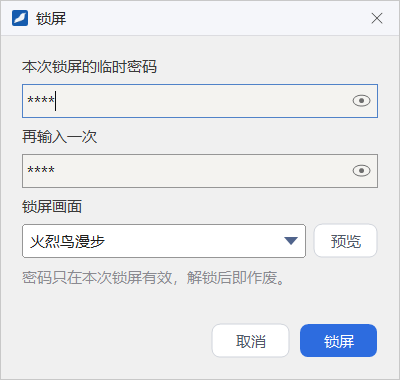
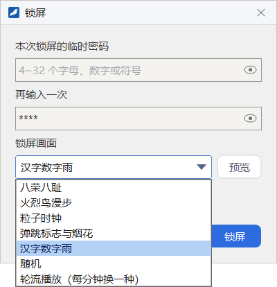
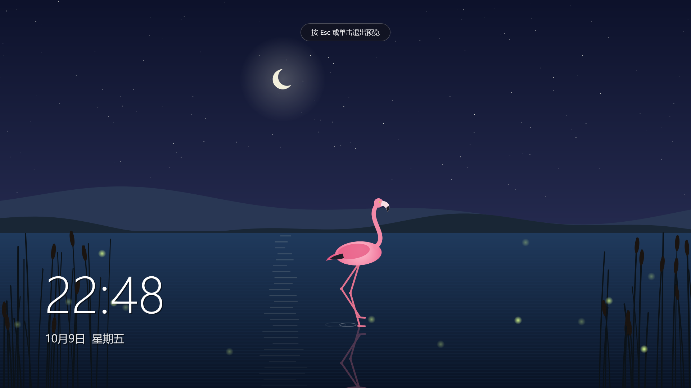

锁屏
临时离开座位时，可以用客户端的锁屏功能锁住整台电脑：设一个只在本次有效的临时密码，屏幕上播放动画和时间，别人无法操作你的电脑，回来后输入密码即可解锁。
- 适用：全体员工，登录前后都可以使用
- 入口：托盘菜单或主面板系统菜单里的「锁屏」
设置临时密码并锁屏
- 右键任务栏右下角的 FlamingoIM 托盘图标选 锁屏，或在主面板系统菜单里选 锁屏，打开「锁屏」窗口。
- 在 本次锁屏的临时密码 里输入 4~32 个字母、数字或符号，在 再输入一次 里重复一遍。点输入框右侧的眼睛图标可以临时显示明文。
- 在 锁屏画面 里选择一种动画，可以先点 预览 看看效果。
- 点 锁屏，电脑立即锁定。


密码只用一次这个密码只在本次锁屏有效，解锁后即作废，下次锁屏要重新设置。它与你的登录密码、Windows 密码都没有关系。
锁屏画面
| 选项 | 说明 |
|---|---|
| 八荣八耻、火烈鸟漫步、粒子时钟、弹跳标志与烟花、汉字数字雨 | 五种动画，选哪种就一直播放哪种 |
| 随机 | 每次锁屏时随机选一种 |
| 轮流播放（每分钟换一种） | 五种动画依次轮换，每分钟换一种 |
预览
点 预览，所选动画会在「锁屏」窗口所在的显示器上全屏播放，画面上方提示「按 Esc 或单击退出预览」。预览不需要密码，按任意键或单击即可退出，回到「锁屏」窗口。

锁屏之后
锁定后，每块显示器都全屏显示所选动画，左下角显示时间和日期。锁屏期间：
- 锁屏界面始终显示在最前面，并拦截 Windows 键等切换窗口用的按键，别人无法操作其他程序。
- 电脑不会自动休眠。
- 客户端自己的弹窗和提示音会推迟到解锁之后，或者不再出现。
- 如果你的电脑正在被同事远程控制，控制会立即结束。
解锁
- 在锁屏画面上单击，屏幕下方出现 解锁、重启、关机 三个按钮。
- 点 解锁，按钮上方出现密码框。
- 输入本次锁屏设置的临时密码，按 Enter。密码正确即解锁，回到锁屏前的桌面。
- 密码不正确时提示「密码不正确，请重试」。连续输错 5 次，要等待 30 秒才能再试，期间提示「输错次数过多，请 N 秒后再试」。
- 按 Esc 逐级退回：先收起密码框，再收起按钮，回到只有动画的画面。一段时间没有操作，按钮也会自动收起。
- 点 重启 或 关机 会先确认「确定要重启吗？」或「确定要关机吗？」，并提醒其他程序里未保存的内容可能会丢失。
关于截图本章只有设置窗口和预览的截图，锁定后的界面按上文描述为准。